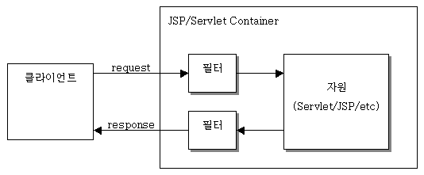

학습목표: Intellij를 이용해 스프링프레임워크를 활용할 수 있다

public class FirstFilter implements javax.servlet.Filter {
public void init(FilterConfig filterConfig) throws ServletException {
// 필터 초기화 작업
}
public void doFilter(ServletRequest request,
ServletResponse response,
FilterChain chain)
throws IOException, ServletException {
// 1. request 파리미터를 이용하여 요청의 필터 작업 수행
// 2. 체인의 다음 필터 처리
chain.doFilter(request, response); // 3. response를 이용하여 응답의 필터링 작업 수행
}
public void destroy() {
// 주로 필터가 사용한 자원을 반납
}
}
<mvc:interceptors>
<mvc:interceptor>
<mvc:mapping path="/**" />
<bean class="com.victolee.interceptor.MyInterceptor" />
</mvc:interceptor>
</mvc:interceptors>
public class MyInterceptor implements HandlerInterceptor{
// controller로 보내기 전에 처리하는 인터셉터
// 반환이 false라면 controller로 요청을 안함
// 매개변수 Object는 핸들러 정보를 의미한다. ( RequestMapping , DefaultServletHandler )
@Override
public boolean preHandle(
HttpServletRequest request, HttpServletResponse response,
Object obj) throws Exception {
System.out.println("MyInterCeptor - preHandle");
return false;
}
// controller의 handler가 끝나면 처리됨
@Override
public void postHandle(
HttpServletRequest request, HttpServletResponse response,
Object obj, ModelAndView mav)
throws Exception {
}
// view까지 처리가 끝난 후에 처리됨
@Override
public void afterCompletion(
HttpServletRequest request, HttpServletResponse response,
Object obj, Exception e)
throws Exception {
}
}
public class MyInterceptor extends HandlerInterceptorAdapter {
@Override
public boolean preHandle(
HttpServletRequest request, HttpServletResponse response,
Object obj) throws Exception {
System.out.println("MyInterCeptor - preHandle");
return true;
}
}